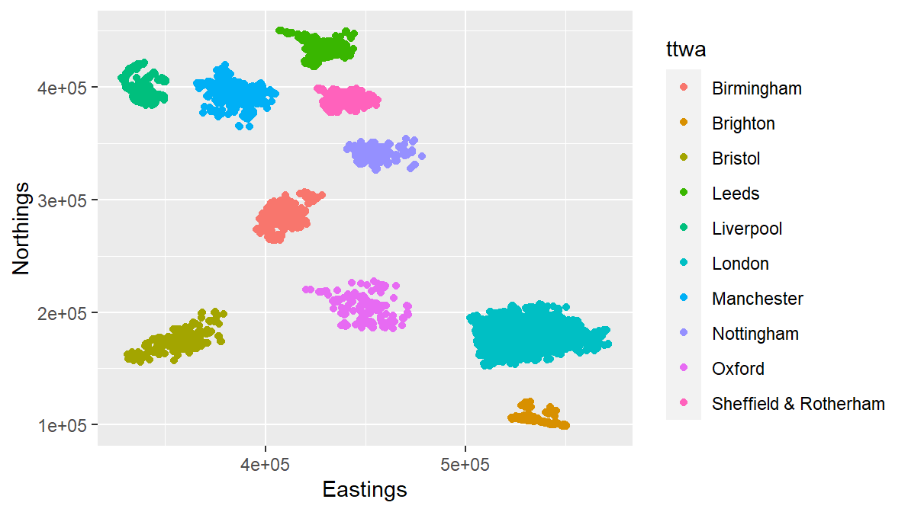
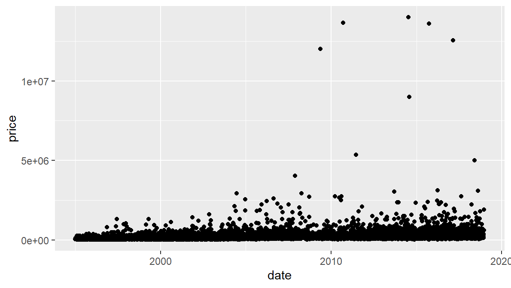

8 Let’s jump right into ggplot
We can start making some ggplots immediately: these won’t be pretty, but we can use them to illustrate the basics of how ggplot works, step by step.
You should have ggplot already loaded as part of the tidyverse.
All we’ll do to start with: plot the locations of some of the sales, so we can see what the overall geographical reach of the data is.
As you can see from the environment pane, there are several million sales in the data (one sale per row). That would take a long time to plot, so we’re just going to take a smaller sample using dplyr’s sample_n function. This takes a random sample of rows from the dataframe. We’ll store the sample in a new variable. Here, we’re just getting ten thousand rows / sales.
saleSample <- sample_n(sales,10000)Let’s plot our sample of sales using ggplot. Get this coded first, then we’ll talk through what we just did.
Another new thing to note here: the second line follows a plus at the end of the first. If you type the plus then press enter, RStudio will automatically indent the next line for you. ggplot is fussy about this plus - it needs to be at the end of the line, it can’t be at the beginning of the next one:
ggplot(saleSample, aes(x = Eastings, y = Northings)) +
geom_point()
So we can see house sales in different locations across England. But how did that work? Take a look at the cheatsheet: basics on page one has a little template explaining what ggplot requires to plot. It needs just the three things we supplied:
- The data. In this case, saleSample. That goes first.
- The mapping. This is done in the aesthetic function. (That’s what aes is short for.) In aes, we map our variables to the graphics’ aesthetics.
- The important principle here: each mapping requires a single column of data. This one requirement dictates how we must shape our data for ggplot. This is so important we’ll go over it again in a moment!
- Here, we’ve mapped two variables to the x and y aesthetics (which we’d usually think of as just a graph’s x and y axes) - but there are bunch of others. More on that next.
- the geometry. Again, look at your cheat sheet, page 1. Almost all of the first page gives you all the different geometries ggplot can use. We used geom_point so that x and y are mapped to points.
- You can also get a quick guide to the geoms using RStudio’s autocomplete. This will list them all and give a little help overview.

As with all other functions, for the full help page, use e.g.:
?geom_pointWhile we’re here: try the zoom button and export button above the plot. Each of the options will give you a pop-out version of the plot that can be re-sized with the corner handle. It can then either be saved or copied to the clipboard. We’ll look at how to save the plot programmatically shortly.
If you look at geom_point on the cheatsheet, you’ll see this list: ‘alpha, colour, fill, shape, size, stroke’. This is the list of other aesthetics you can map variables to when you’re using the point geometry. This list differs depending on what you use - the cheatsheet tells you which you can use for each geometry type.
These mappings all happen in the aes function, same as we did for x and y. So, for example, we can map colours to the TTWA / city.
ggplot(saleSample, aes(x = Eastings, y = Northings, colour = ttwa)) +
geom_point()
This is not a good map! But it illustrates how aes works. There are a few other new things here.
the ttwa variable is discrete: it’s a list of different places. ggplot figures this out and assigns one colour per category. We’ll look at what happens with continuous variables below.
ggplot has also automatically added a legend.
So back to the most important principle: ggplot wants each variable in its own column, in `long form’. This applies to each variable you map to an aesthetic.
Here’s a little illustration to help with the intuition. If we’ve mapped ttwa to the colour aesthetic thenggplot will work out how to map a colour to each discrete group within that variable. If the variable had been continuous, ggplot would have supplied a continuous scale.

Later, we’ll look at what to do if your data isn’t already in long form.
You can of course choose what values to assign to x and y. And notice what happens if you assign a discrete variable to one of the axes. Here we put property sale price on y and ttwa on x:
ggplot(saleSample, aes(x = ttwa, y = price)) +
geom_point()
Again - ggplot knows it’s discrete and labels each place. The plot itself is, again, fairly awful: overlapping points and labels, poor axis ticks etc. We’ll come back to all the prettifying things like labelling later, but let’s stick to the essentials for now.
So if we want to know something about the impact of the crash, we’ll need to start using dates. But using them raw isn’t a great idea:
ggplot(saleSample, aes(x = date, y = price)) +
geom_point() 
ggplot can plot dates correctly and provides axis ticks - but using each day is far too messy. We need to do two things to fix this:
- Create a better date category - we’ll break the data down by year.
- Summarise the housing data based on this.
There are two ways to summarise data for ggplot:
- ggplot’s own stat functions (more on these after the next section…)
- Wrangling into the right shape ourselves using dplyr and other R functions. While rather more work, this is the only way to fully control what you want to visualise. Learning about wrangling and dplyr will be a big chunk of the day.
First-up though: making a useable date column.